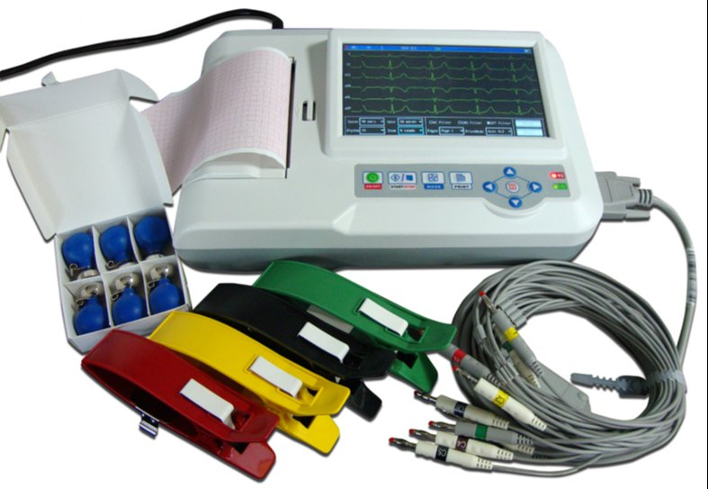
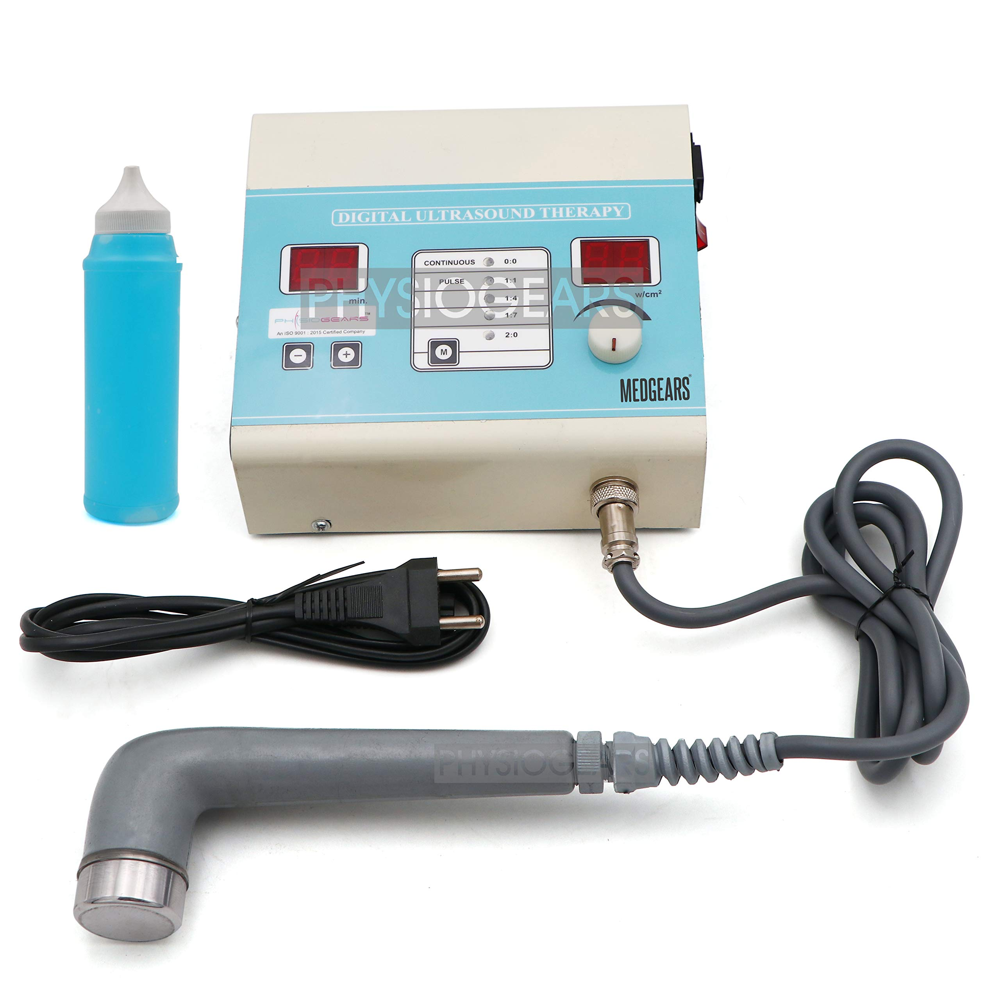
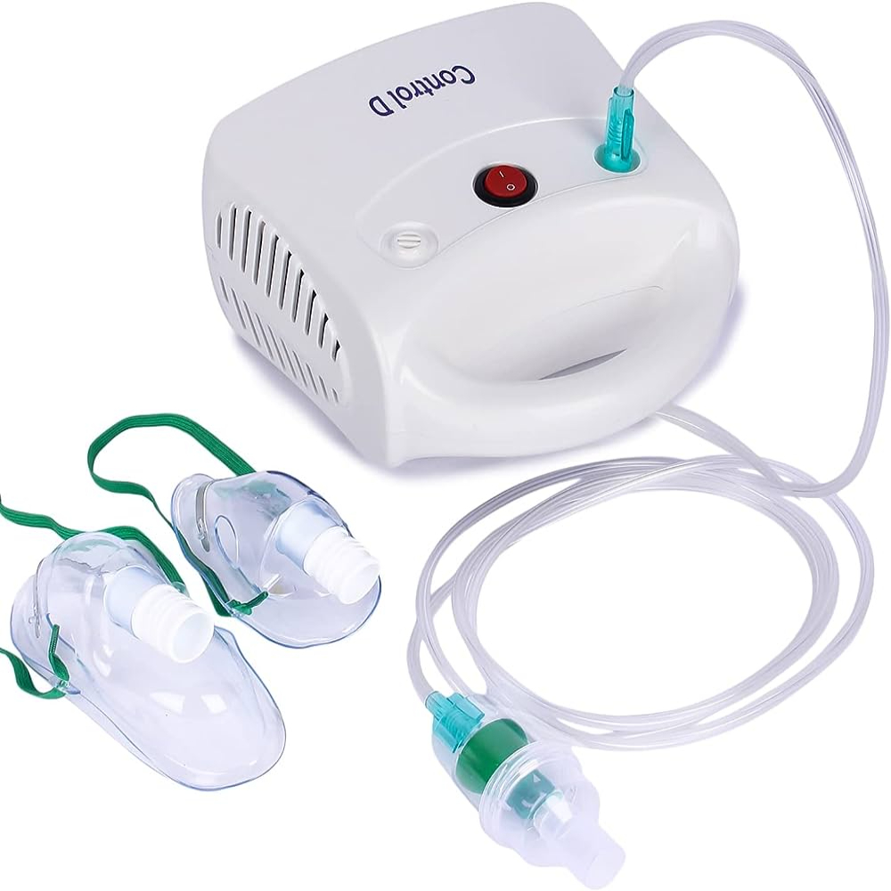
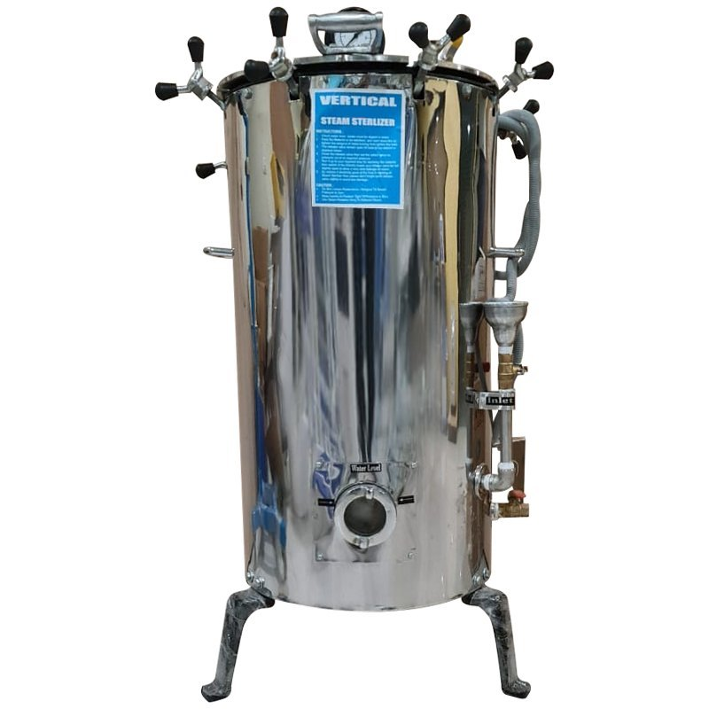
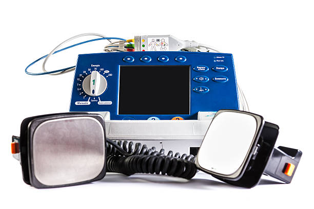
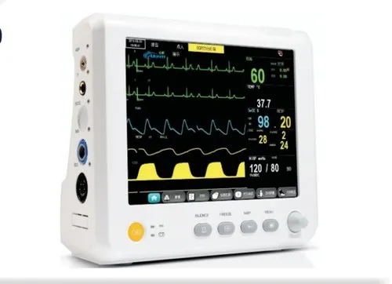

-
ECG
An Electrocardiogram (ECG or EKG) machine is a medical device used to record the electrical activity of the heart over a period of time. It's a valuable tool in diagnosing various heart conditions and abnormalities.ECG machines measure the electrical impulses generated by the heart as it beats. Electrodes placed on the skin detect these impulses, which are then amplified, processed, and displayed as a waveform on the machine's screen or printed on paper.

-
Physiotherapy Instruments
Physiotherapy instruments are tools and equipment used by physiotherapists to assess, diagnose, treat, and rehabilitate patients with physical impairments, disabilities, or injuries. These instruments are designed to aid in restoring movement, function, and overall quality of life for individuals with musculoskeletal, neurological, cardiopulmonary, or other conditions.

-
Nebulizer
A nebulizer is a medical device that converts liquid medication into a mist or aerosol that can be inhaled into the lungs. It is commonly used for treating respiratory conditions such as asthma, chronic obstructive pulmonary disease (COPD), cystic fibrosis, and other lung diseases.A nebulizer and the medication used with it are typically prescribed by a healthcare provider.The type of medication and frequency of use will depend on the patient's condition and treatment plan.

-
Autoclave
An autoclave is a machine used in various fields, particularly in medicine, microbiology, and veterinary science, to sterilize equipment, glassware, and liquids. It works by subjecting the items to high-pressure saturated steam at a temperature above the boiling point of water.The items to be sterilized are placed inside the autoclave chamber, and the chamber is sealed. Water is then added to the chamber, and the autoclave is heated to the desired temperature. As the temperature rises, steam is produced, increasing the pressure inside the chamber. The items are exposed to high-pressure steam for a specified period, effectively sterilizing them.

-
Defibrillator
A defibrillator is a medical device used to deliver a therapeutic dose of electrical energy to the heart with the aim of restoring normal heart rhythm in cases of cardiac arrhythmias, particularly ventricular fibrillation and pulseless ventricular tachycardia. These conditions can lead to sudden cardiac arrest, a life-threatening emergency where the heart stops pumping effectively.Defibrillators play a critical role in the chain of survival for individuals experiencing sudden cardiac arrest, alongside CPR and early access to emergency medical services. Their widespread availability and proper use can significantly improve outcomes for cardiac arrest victims.

-
Multipara monitor
A multiparameter monitor, often referred to as a multipara monitor or simply a multi-parameter monitor, is a medical device used for continuously monitoring various physiological parameters of patients in healthcare settings such as hospitals, clinics, and emergency rooms. These devices are essential tools for healthcare professionals to assess a patient's vital signs, detect abnormalities, and provide timely interventions.multiparameter monitors play a crucial role in patient care by providing healthcare providers with essential data to monitor patient status, make clinical decisions, and deliver timely interventions to improve patient outcomes.
